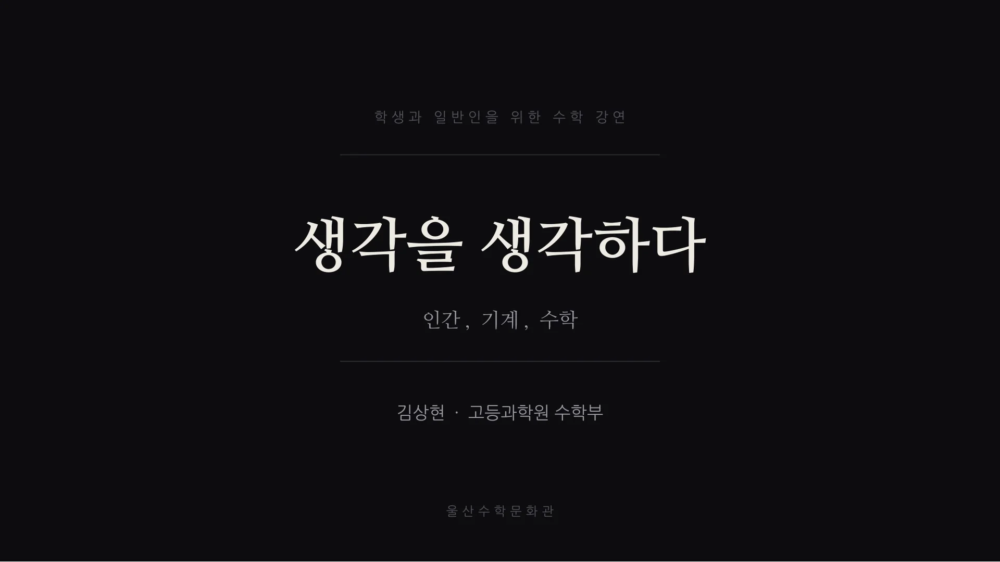
인간, 기계, 수학
김상현 · 고등과학원 수학부
울산수학문화관
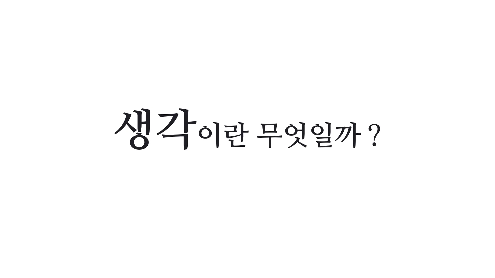
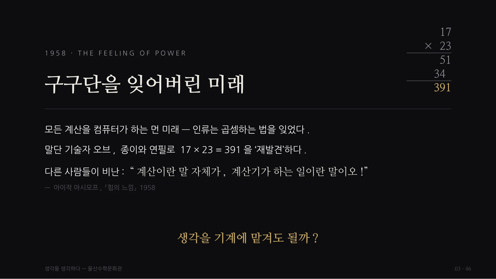
17
× 23
51
34
391
모든 계산을 컴퓨터가 하는 먼 미래 — 인류는 곱셈하는 법을 잊었다.
말단 기술자 오브, 종이와 연필로 17 × 23 = 391을 ‘재발견’하다.
다른 사람들이 비난: “계산이란 말 자체가, 계산기가 하는 일이란 말이오!”
— 아이작 아시모프, 「힘의 느낌」 1958
생각을 기계에 맡겨도 될까?
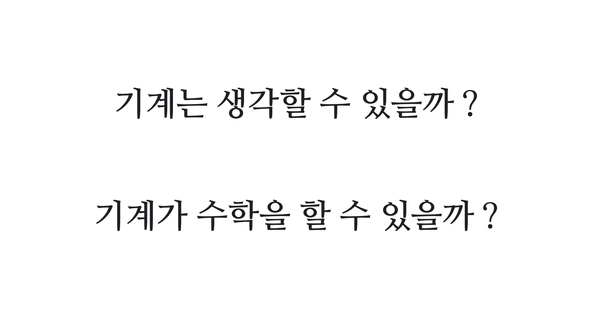
기계가 수학을 할 수 있을까?
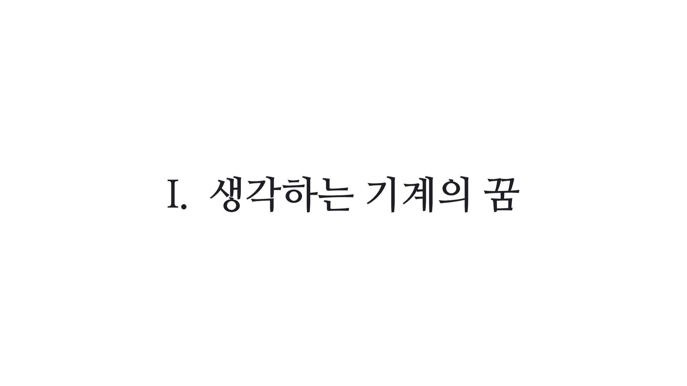
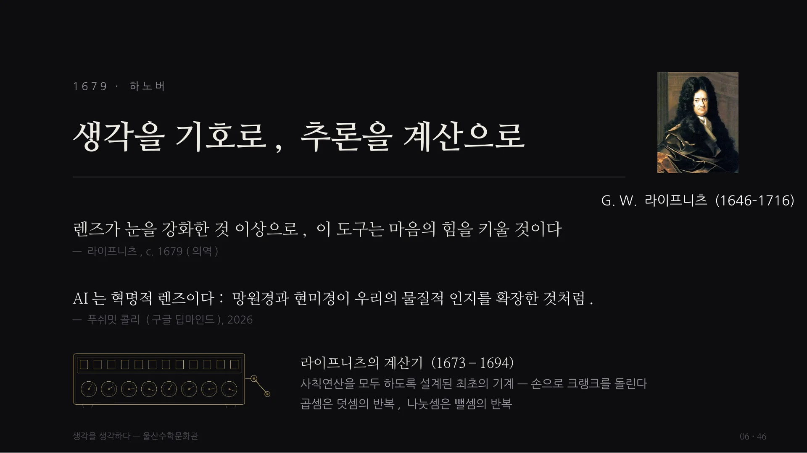
G. W. 라이프니츠 (1646–1716)
렌즈가 눈을 강화한 것 이상으로, 이 도구는 마음의 힘을 키울 것이다
— 라이프니츠, c. 1679 (의역)
AI는 혁명적 렌즈이다: 망원경과 현미경이 우리의 물질적 인지를 확장한 것처럼.
— 푸쉬밋 콜리 (구글 딥마인드), 2026
라이프니츠의 계산기 (1673–1694)
사칙연산을 모두 하도록 설계된 최초의 기계 — 손으로 크랭크를 돌린다
곱셈은 덧셈의 반복, 나눗셈은 뺄셈의 반복
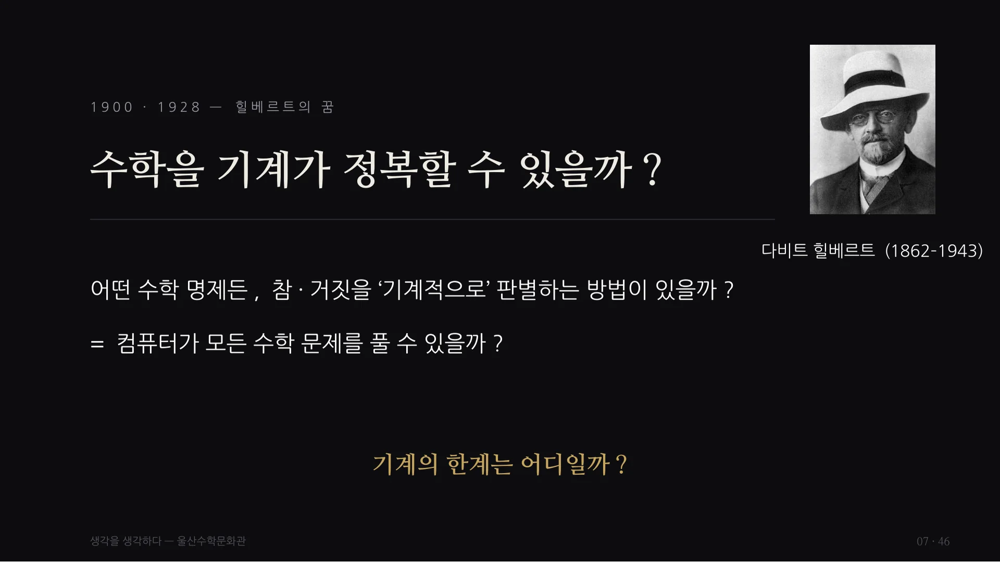
다비트 힐베르트 (1862–1943)
어떤 수학 명제든, 참·거짓을 ‘기계적으로’ 판별하는 방법이 있을까?
= 컴퓨터가 모든 수학 문제를 풀 수 있을까?
기계의 한계는 어디일까?
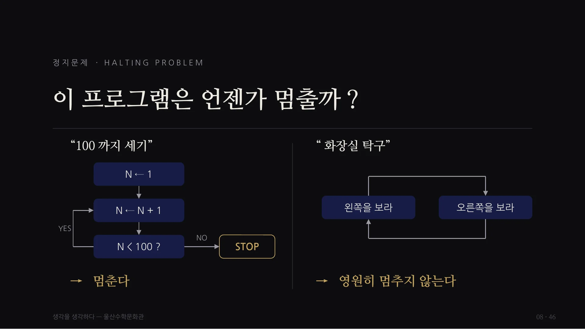
“100까지 세기”
N ← 1
N ← N + 1
YES
N < 100 ?
NO
STOP
“화장실 탁구”
왼쪽을 보라 · 오른쪽을 보라
→ 멈춘다
→ 영원히 멈추지 않는다
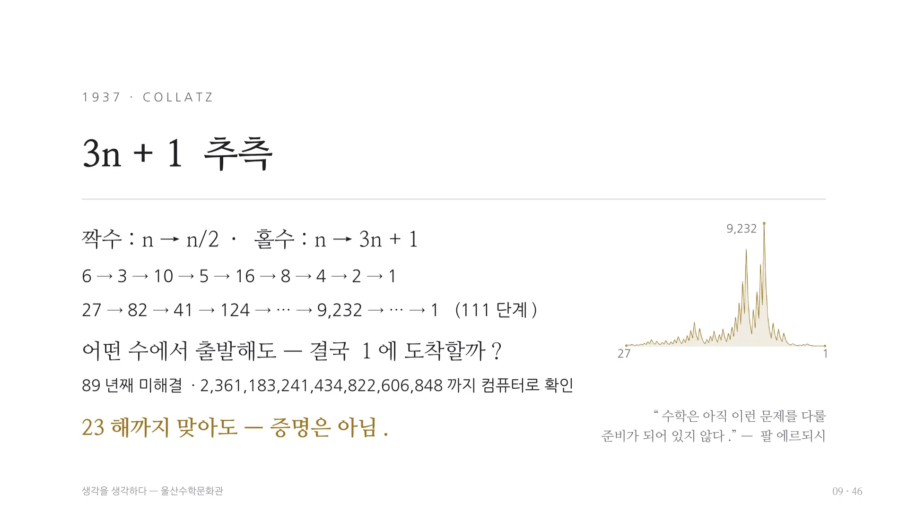
짝수: n → n/2 · 홀수: n → 3n + 1
6 → 3 → 10 → 5 → 16 → 8 → 4 → 2 → 1
27 → 82 → 41 → 124 → … → 9,232 → … → 1 (111단계)
어떤 수에서 출발해도 — 결국 1에 도착할까?
89년째 미해결 · 2,361,183,241,434,822,606,848까지 컴퓨터로 확인
9,232
27 · 1
23해까지 맞아도 — 증명은 아님.
“수학은 아직 이런 문제를 다룰
준비가 되어 있지 않다.” — 팔 에르되시
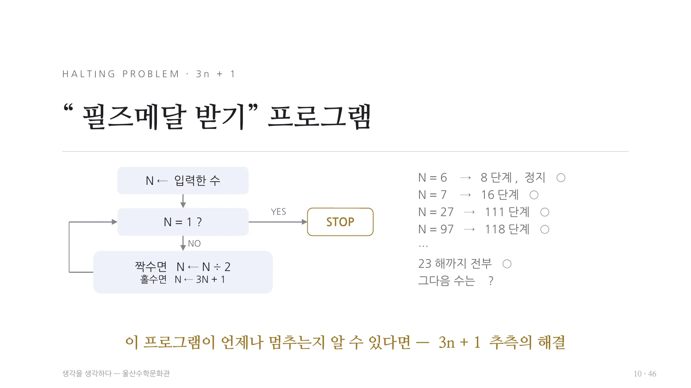
N ← 입력한 수
N = 1 ?
YES
STOP
NO
짝수면 N ← N ÷ 2
홀수면 N ← 3N + 1
N = 6 → 8단계, 정지 ○
N = 7 → 16단계 ○
N = 27 → 111단계 ○
N = 97 → 118단계 ○
…
23해까지 전부 ○
그다음 수는 ?
이 프로그램이 언제나 멈추는지 알 수 있다면 — 3n + 1 추측의 해결
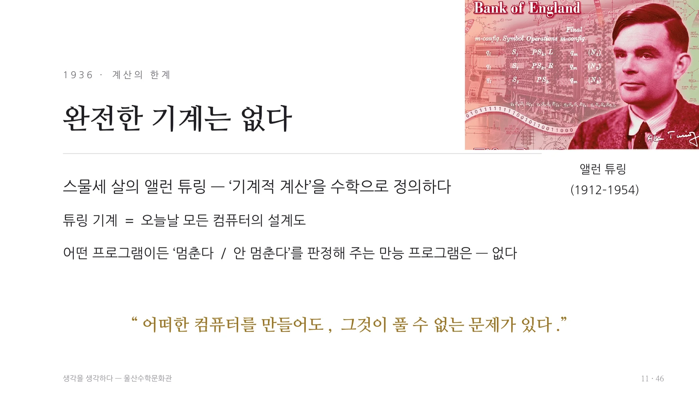
스물세 살의 앨런 튜링 — ‘기계적 계산’을 수학으로 정의하다
튜링 기계 = 오늘날 모든 컴퓨터의 설계도
어떤 프로그램이든 ‘멈춘다 / 안 멈춘다’를 판정해 주는 만능 프로그램은 — 없다
앨런 튜링
(1912–1954)
“어떠한 컴퓨터를 만들어도, 그것이 풀 수 없는 문제가 있다.”
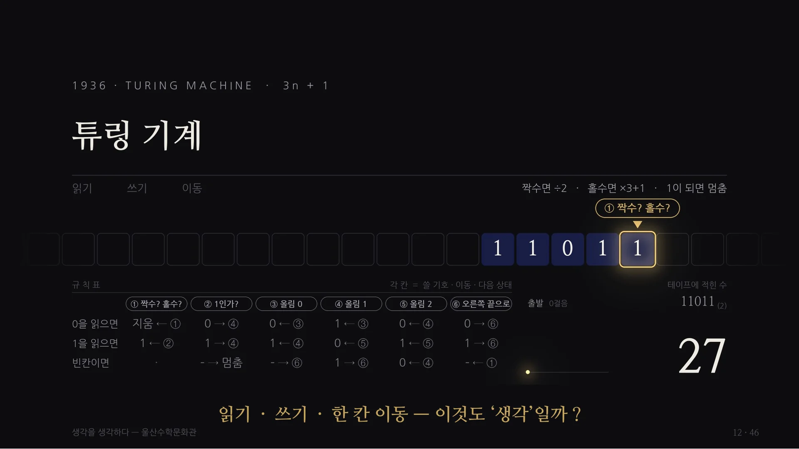
읽기 · 쓰기 · 한 칸 이동 — 이것도 ‘생각’일까?
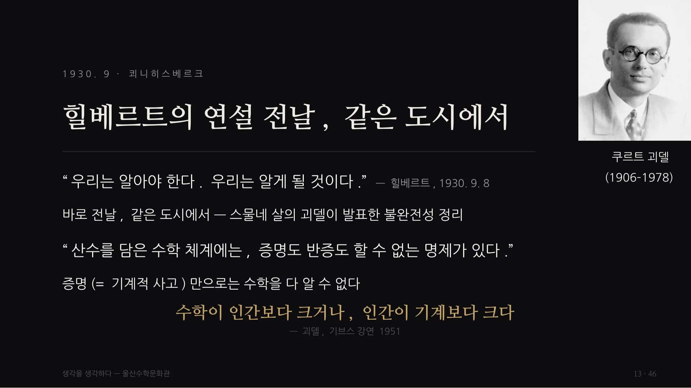
쿠르트 괴델
(1906–1978)
“우리는 알아야 한다. 우리는 알게 될 것이다.” — 힐베르트, 1930. 9. 8
바로 전날, 같은 도시에서 — 스물네 살의 괴델이 발표한 불완전성 정리
“산수를 담은 수학 체계에는, 증명도 반증도 할 수 없는 명제가 있다.”
증명(= 기계적 사고)만으로는 수학을 다 알 수 없다
수학이 인간보다 크거나, 인간이 기계보다 크다
— 괴델, 기브스 강연 1951
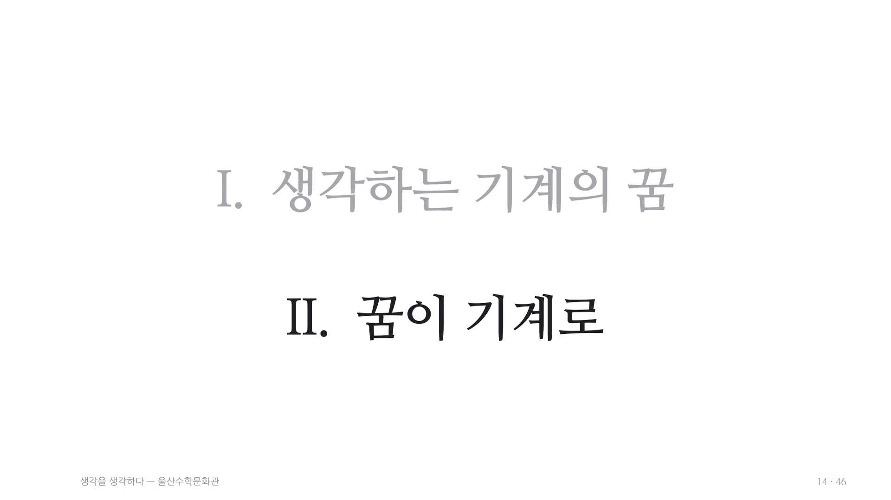
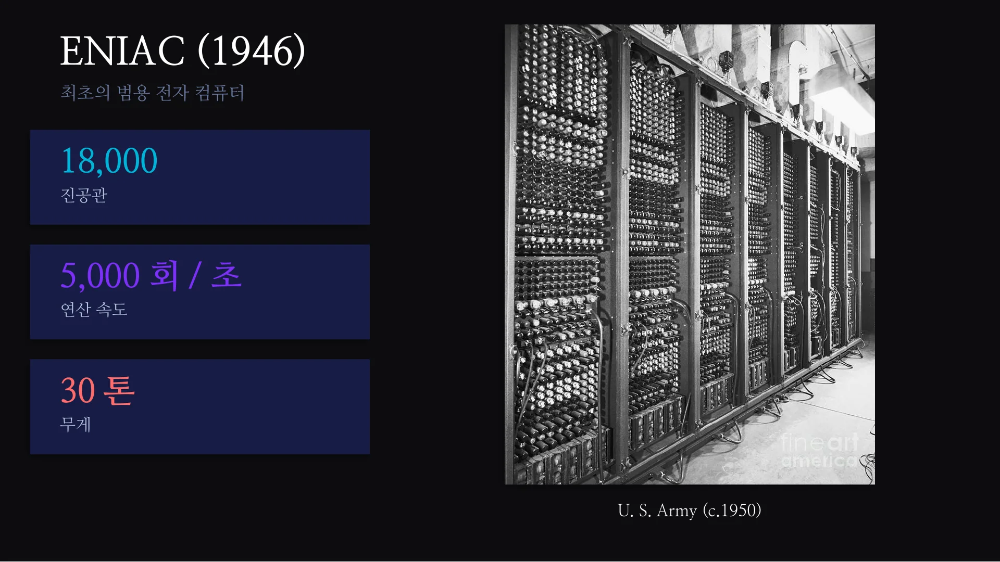
최초의 범용 전자 컴퓨터
18,000
진공관
5,000회/초
연산 속도
30톤
무게
U. S. Army (c.1950)
El Capitan (2024)
트랜지스터 약 6,400조 개
넓이는 적혈구의 1/1000 미만
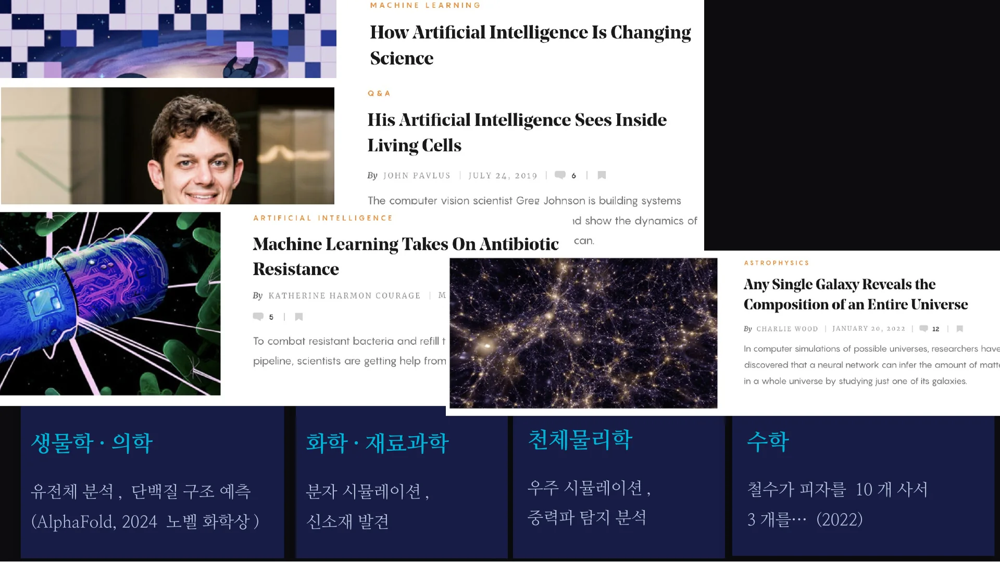
생물학·의학
유전체 분석, 단백질 구조 예측
(AlphaFold, 2024 노벨 화학상)
화학·재료과학
분자 시뮬레이션,
신소재 발견
천체물리학
우주 시뮬레이션,
중력파 탐지 분석
수학
철수가 피자를 10개 사서
3개를… (2022)
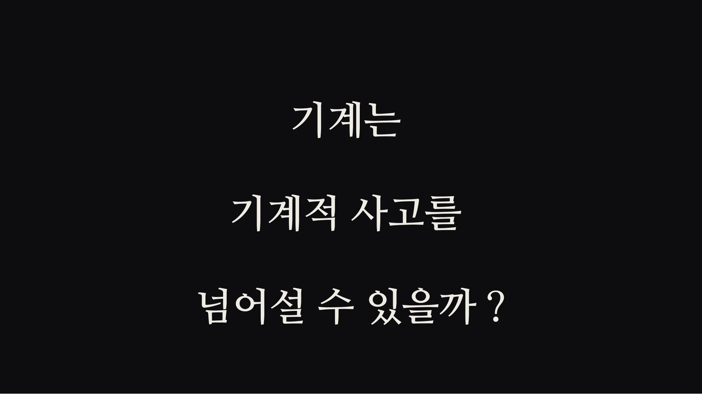
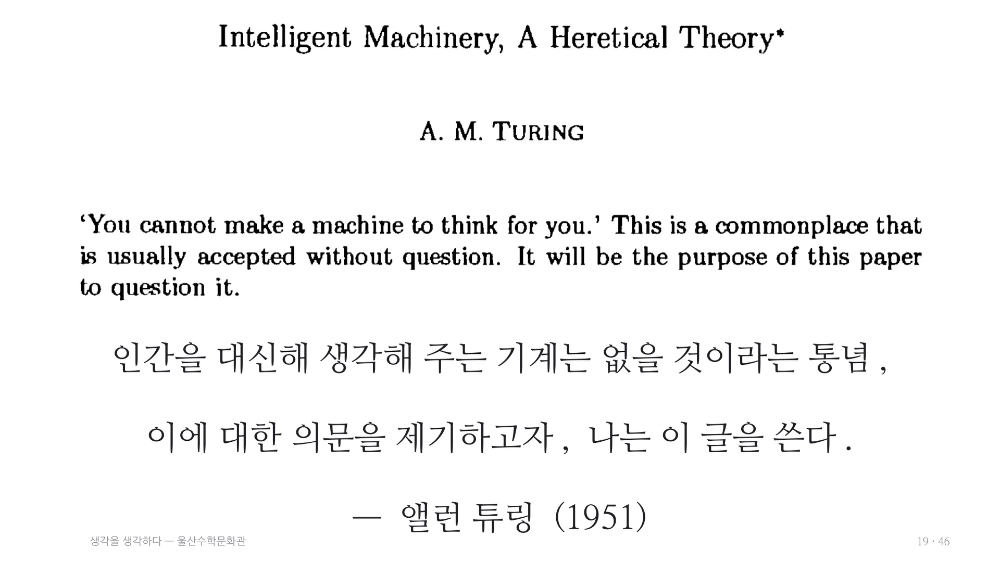
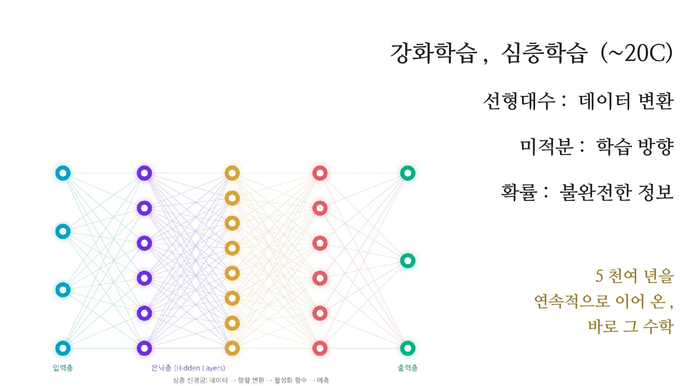
5천여 년을
연속적으로 이어 온,
바로 그 수학
서울 포시즌스 호텔, 2016. 3
200,000,000 명 · 전 세계에서 관전
4:1 전적 · · AlphaGo 승 (vs. 이세돌 9단)
“…나의 세상이 무너졌다” — 이세돌, 2024
78수 · · ‘제4국, 신의 한 수’ — AlphaGo의 예측 1:10,000
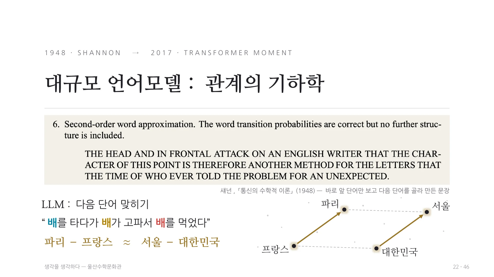
LLM : 다음 단어 맞히기
“배를 타다가 배가 고파서 배를 먹었다”
섀넌, 「통신의 수학적 이론」 (1948) — 바로 앞 단어만 보고 다음 단어를 골라 만든 문장
파리
프랑스
서울
대한민국
파리 – 프랑스 ≈ 서울 – 대한민국
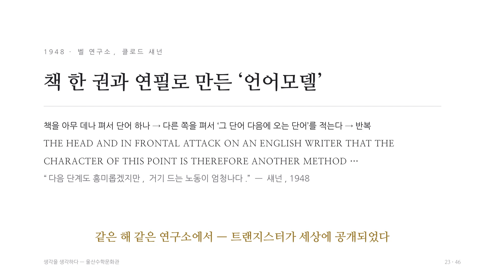
책을 아무 데나 펴서 단어 하나 → 다른 쪽을 펴서 ‘그 단어 다음에 오는 단어’를 적는다 → 반복
THE HEAD AND IN FRONTAL ATTACK ON AN ENGLISH WRITER THAT THE CHARACTER OF THIS POINT IS THEREFORE ANOTHER METHOD …
“다음 단계도 흥미롭겠지만, 거기 드는 노동이 엄청나다.” — 섀넌, 1948
같은 해 같은 연구소에서 — 트랜지스터가 세상에 공개되었다
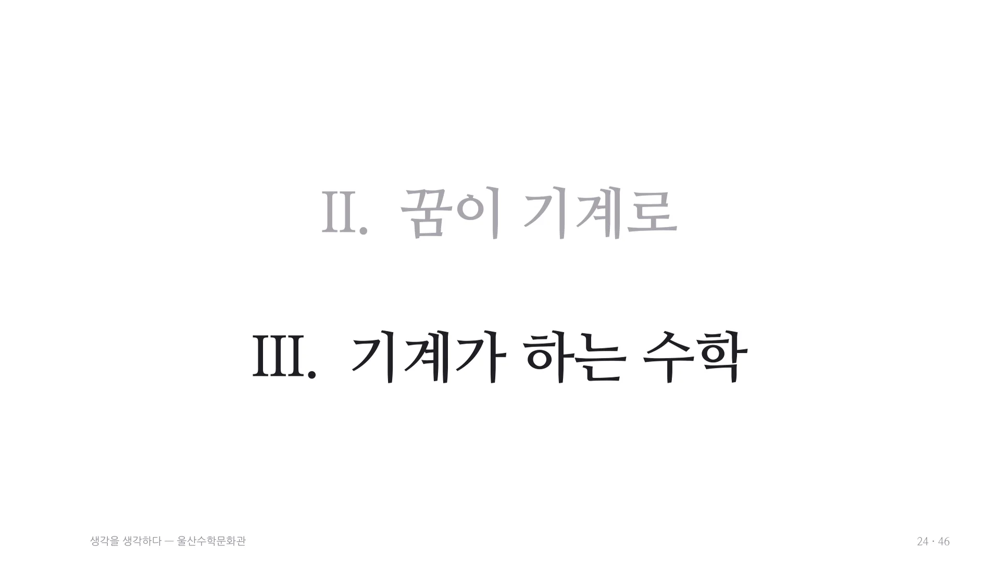
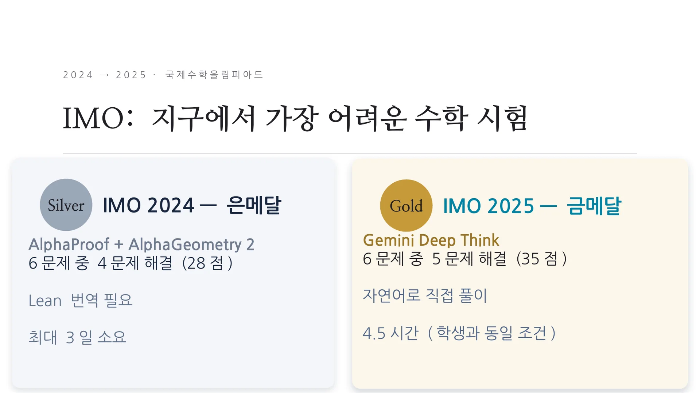
Silver · Gold
IMO 2024 — 은메달 · IMO 2025 — 금메달
AlphaProof + AlphaGeometry 2 6문제 중 4문제 해결 (28점) Lean 번역 필요
최대 3일 소요
Gemini Deep Think 6문제 중 5문제 해결 (35점) 자연어로 직접 풀이
4.5시간 (학생과 동일 조건)
제미나이 기반의 수학 연구 에이전트
풀고 → 검증하고 → 고친다
Generator → Verifier → Reviser
수학자와 엔지니어의 협업
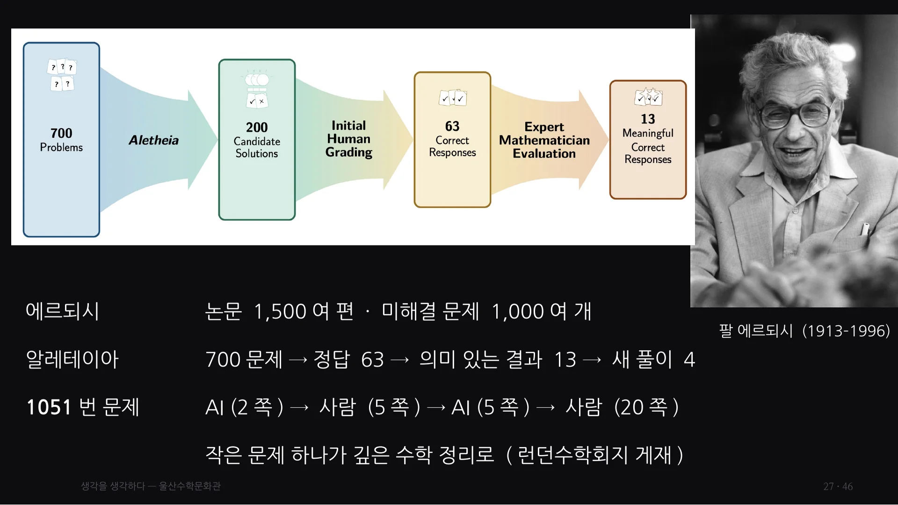
에르되시 · · 논문 1,500여 편 · 미해결 문제 1,000여 개
알레테이아 · 700문제 → 정답 63 → 의미 있는 결과 13 → 새 풀이 4
1051번 문제 · AI (2쪽) → 사람 (5쪽) → AI (5쪽) → 사람 (20쪽)
작은 문제 하나가 깊은 수학 정리로 (런던수학회지 게재)
팔 에르되시 (1913–1996)
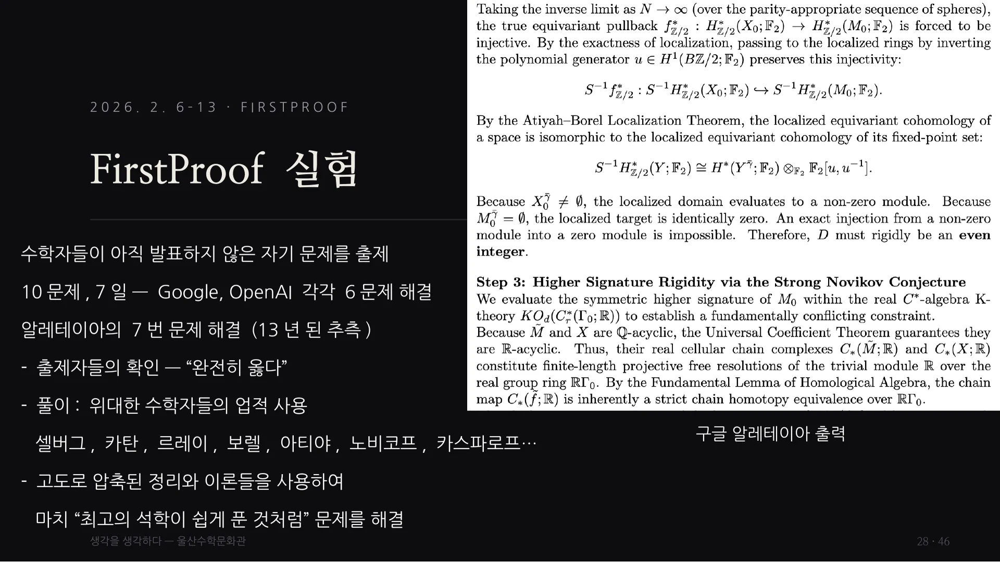
구글 알레테이아 출력
수학자들이 아직 발표하지 않은 자기 문제를 출제
10문제, 7일 — Google, OpenAI 각각 6문제 해결
알레테이아의 7번 문제 해결 (13년 된 추측)
- 출제자들의 확인 — “완전히 옳다”
- 풀이: 위대한 수학자들의 업적 사용
셀버그, 카탄, 르레이, 보렐, 아티야, 노비코프, 카스파로프…
- 고도로 압축된 정리와 이론들을 사용하여
마치 “최고의 석학이 쉽게 푼 것처럼” 문제를 해결
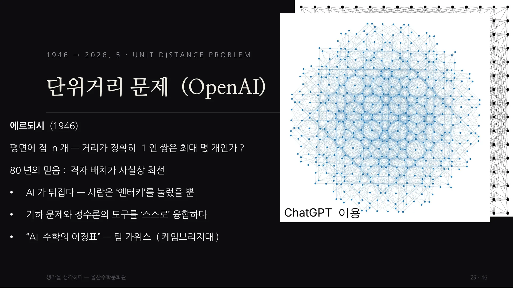
ChatGPT 이용
에르되시 (1946)
평면에 점 n개 — 거리가 정확히 1인 쌍은 최대 몇 개인가?
80년의 믿음: 격자 배치가 사실상 최선
AI가 뒤집다 — 사람은 ‘엔터키’를 눌렀을 뿐
기하 문제와 정수론의 도구를 ‘스스로’ 융합하다
“AI 수학의 이정표” — 팀 가워스 (케임브리지대)
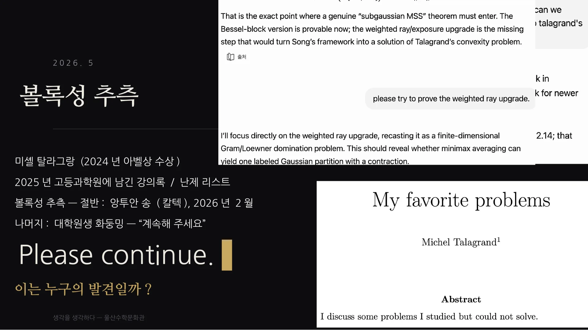
미셸 탈라그랑 (1952– )
미셸 탈라그랑 (2024년 아벨상 수상)
2025년 고등과학원에 남긴 강의록 / 난제 리스트
볼록성 추측 — 절반: 앙투안 송 (칼텍), 2026년 2월
나머지: 대학원생 화둥밍 — “계속해 주세요”
Please continue. ▌
이는 누구의 발견일까?
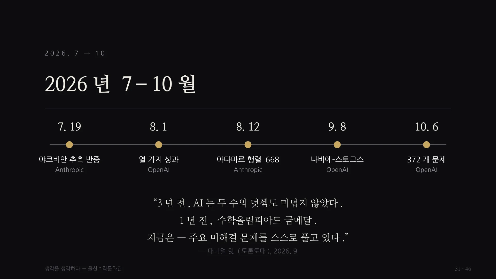
7. 19
야코비안 추측 반증
Anthropic
8. 1
열 가지 성과
OpenAI
8. 12
아다마르 행렬 668
Anthropic
9. 8
나비에–스토크스
OpenAI
10. 6
372개 문제
OpenAI
“3년 전, AI는 두 수의 덧셈도 미덥지 않았다.
1년 전, 수학올림피아드 금메달.
지금은 — 주요 미해결 문제를 스스로 풀고 있다.”
— 대니얼 릿 (토론토대), 2026. 9
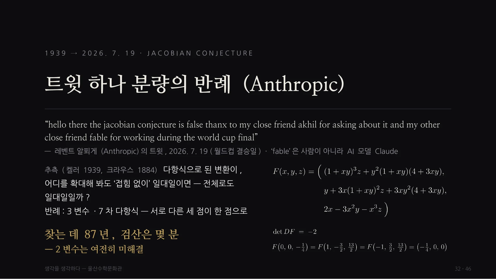
“hello there the jacobian conjecture is false thanx to my close friend akhil for asking about it and my other close friend fable for working during the world cup final”
— 레벤트 알푀게 (Anthropic)의 트윗, 2026. 7. 19 (월드컵 결승일) · ‘fable’은 사람이 아니라 AI 모델 Claude
추측 (켈러 1939, 크라우스 1884) 다항식으로 된 변환이, 어디를 확대해 봐도 ‘접힘 없이’ 일대일이면 — 전체로도 일대일일까?
반례: 3변수 · 7차 다항식 — 서로 다른 세 점이 한 점으로
찾는 데 87년, 검산은 몇 분
— 2변수는 여전히 미해결
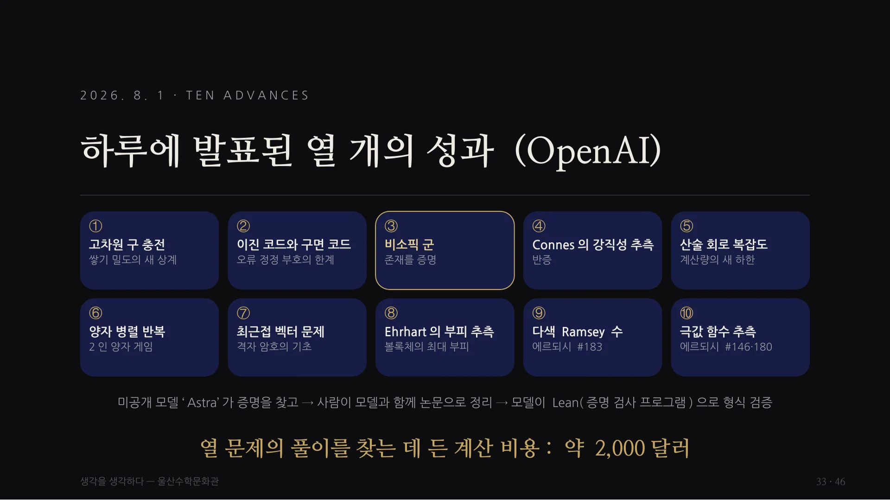
①
②
③
④
⑤
고차원 구 충전
쌓기 밀도의 새 상계
이진 코드와 구면 코드
오류 정정 부호의 한계
비소픽 군
존재를 증명
Connes의 강직성 추측
반증
산술 회로 복잡도
계산량의 새 하한
⑥
⑦
⑧
⑨
⑩
양자 병렬 반복
2인 양자 게임
최근접 벡터 문제
격자 암호의 기초
Ehrhart의 부피 추측
볼록체의 최대 부피
다색 Ramsey 수
에르되시 #183
극값 함수 추측
에르되시 #146·180
미공개 모델 ‘Astra’가 증명을 찾고 → 사람이 모델과 함께 논문으로 정리 → 모델이 Lean(증명 검사 프로그램)으로 형식 검증
열 문제의 풀이를 찾는 데 든 계산 비용: 약 2,000달러
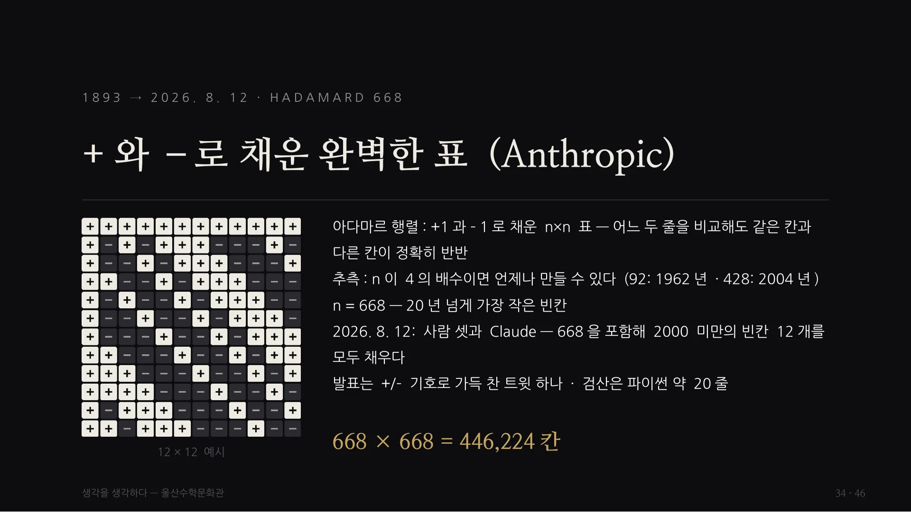
아다마르 행렬: +1과 –1로 채운 n×n 표 — 어느 두 줄을 비교해도 같은 칸과 다른 칸이 정확히 반반
추측: n이 4의 배수이면 언제나 만들 수 있다 (92: 1962년 · 428: 2004년)
n = 668 — 20년 넘게 가장 작은 빈칸
2026. 8. 12: 사람 셋과 Claude — 668을 포함해 2000 미만의 빈칸 12개를 모두 채우다
발표는 +/– 기호로 가득 찬 트윗 하나 · 검산은 파이썬 약 20줄
668 × 668 = 446,224칸
12 × 12 예시
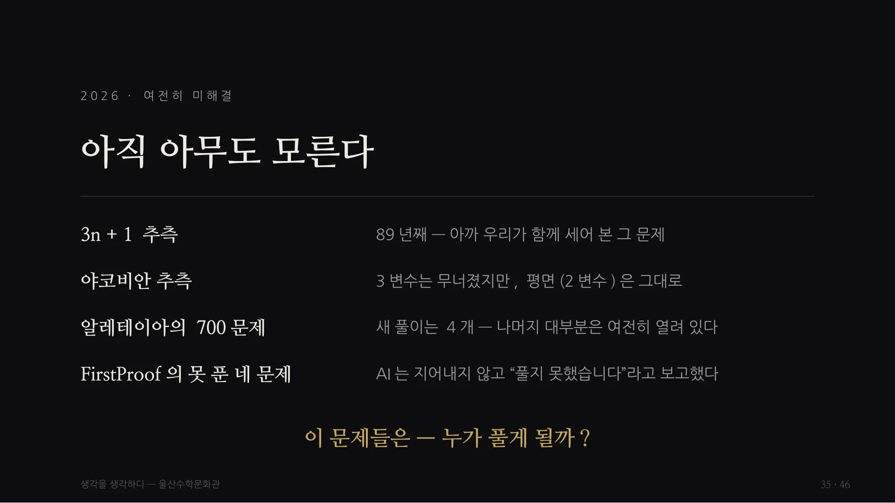
3n + 1 추측 · 89년째 — 아까 우리가 함께 세어 본 그 문제
야코비안 추측 · 3변수는 무너졌지만, 평면(2변수)은 그대로
알레테이아의 700문제 · 새 풀이는 4개 — 나머지 대부분은 여전히 열려 있다
FirstProof의 못 푼 네 문제 · AI는 지어내지 않고 “풀지 못했습니다”라고 보고했다
이 문제들은 — 누가 풀게 될까?
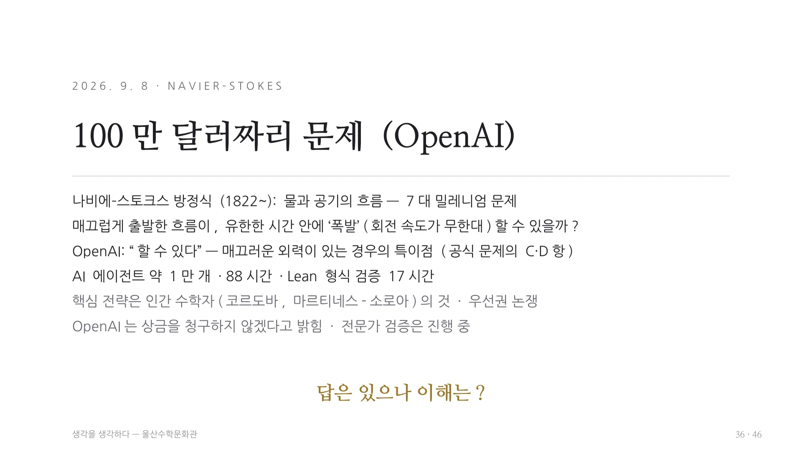
나비에–스토크스 방정식 (1822~): 물과 공기의 흐름 — 7대 밀레니엄 문제
매끄럽게 출발한 흐름이, 유한한 시간 안에 ‘폭발’(회전 속도가 무한대)할 수 있을까?
OpenAI: “할 수 있다” — 매끄러운 외력이 있는 경우의 특이점 (공식 문제의 C·D항)
AI 에이전트 약 1만 개 · 88시간 · Lean 형식 검증 17시간
핵심 전략은 인간 수학자(코르도바, 마르티네스-소로아)의 것 · 우선권 논쟁
OpenAI는 상금을 청구하지 않겠다고 밝힘 · 전문가 검증은 진행 중
답은 있으나 이해는?
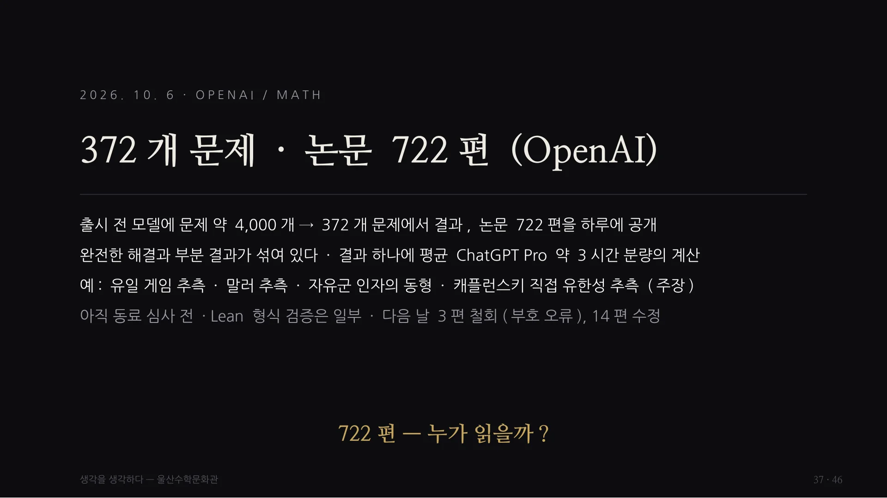
출시 전 모델에 문제 약 4,000개 → 372개 문제에서 결과, 논문 722편을 하루에 공개
완전한 해결과 부분 결과가 섞여 있다 · 결과 하나에 평균 ChatGPT Pro 약 3시간 분량의 계산
예: 유일 게임 추측 · 말러 추측 · 자유군 인자의 동형 · 캐플런스키 직접 유한성 추측 (주장)
아직 동료 심사 전 · Lean 형식 검증은 일부 · 다음 날 3편 철회(부호 오류), 14편 수정
722편 — 누가 읽을까?
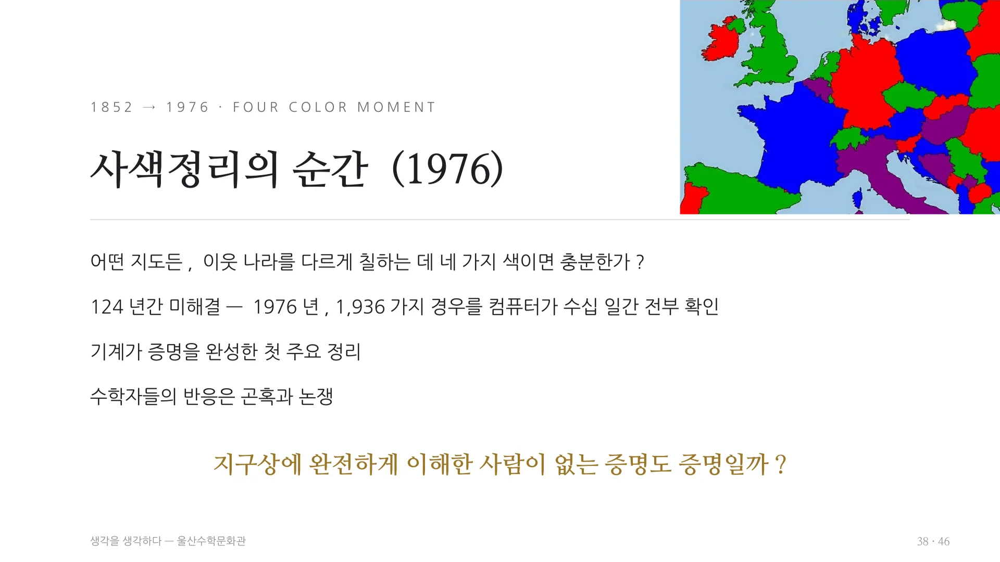
어떤 지도든, 이웃 나라를 다르게 칠하는 데 네 가지 색이면 충분한가?
124년간 미해결 — 1976년, 1,936가지 경우를 컴퓨터가 수십 일간 전부 확인
기계가 증명을 완성한 첫 주요 정리
수학자들의 반응은 곤혹과 논쟁
지구상에 완전하게 이해한 사람이 없는 증명도 증명일까?
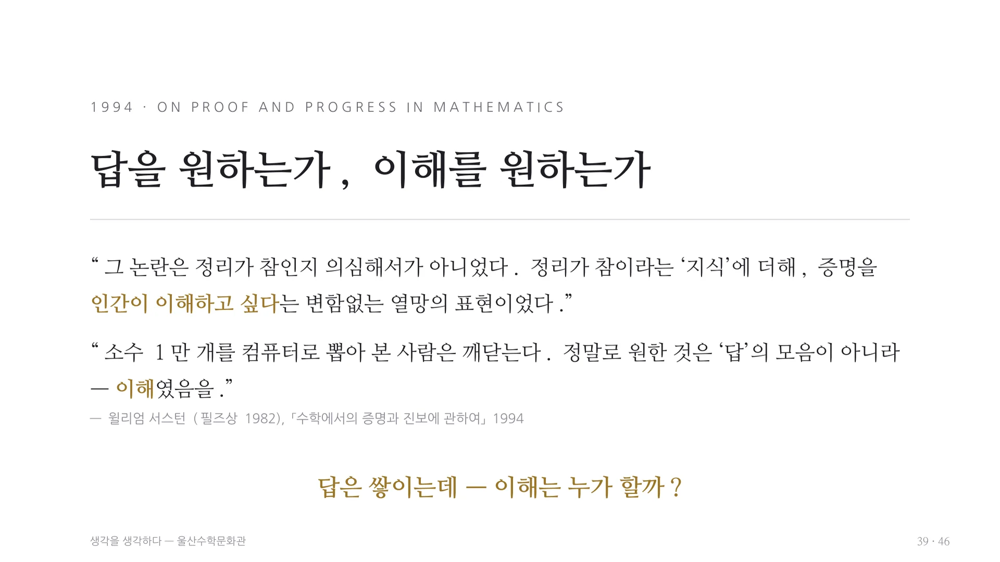
“그 논란은 정리가 참인지 의심해서가 아니었다. 정리가 참이라는 ‘지식’에 더해, 증명을 인간이 이해하고 싶다는 변함없는 열망의 표현이었다.”
“소수 1만 개를 컴퓨터로 뽑아 본 사람은 깨닫는다. 정말로 원한 것은 ‘답’의 모음이 아니라 — 이해였음을.”
— 윌리엄 서스턴 (필즈상 1982), 「수학에서의 증명과 진보에 관하여」 1994
답은 쌓이는데 — 이해는 누가 할까?
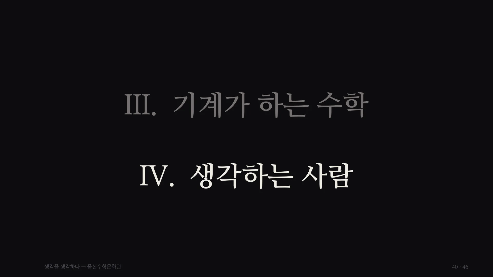
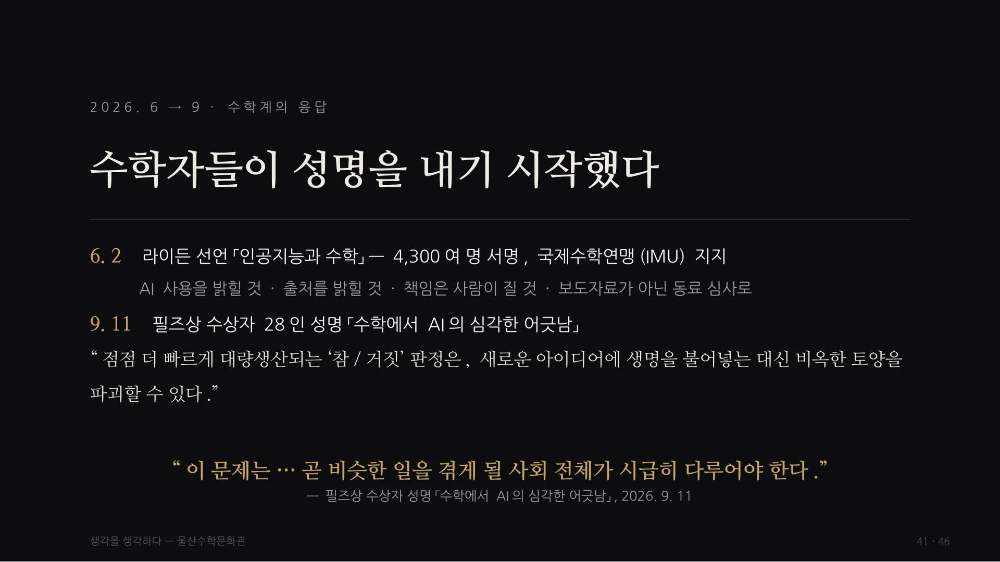
6. 2 라이든 선언 「인공지능과 수학」 — 4,300여 명 서명, 국제수학연맹(IMU) 지지
AI 사용을 밝힐 것 · 출처를 밝힐 것 · 책임은 사람이 질 것 · 보도자료가 아닌 동료 심사로
9. 11 필즈상 수상자 28인 성명 「수학에서 AI의 심각한 어긋남」
“점점 더 빠르게 대량생산되는 ‘참/거짓’ 판정은, 새로운 아이디어에 생명을 불어넣는 대신 비옥한 토양을 파괴할 수 있다.”
“이 문제는 … 곧 비슷한 일을 겪게 될 사회 전체가 시급히 다루어야 한다.”
— 필즈상 수상자 성명 「수학에서 AI의 심각한 어긋남」, 2026. 9. 11
— 앨런 튜링, 「계산 기계와 지능」 1950
— 루트비히 비트겐슈타인, 『수학의 기초에 관한 소견』 1956
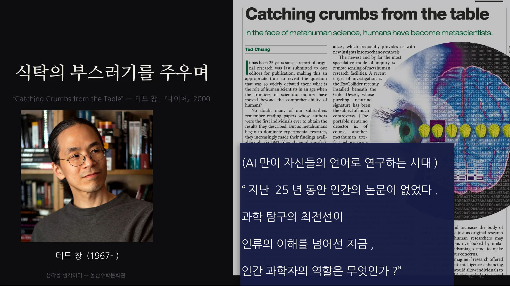
“Catching Crumbs from the Table” — 테드 창, 『네이처』 2000
테드 창 (1967– )
(AI만이 자신들의 언어로 연구하는 시대)
“지난 25년 동안 인간의 논문이 없었다.
과학 탐구의 최전선이
인류의 이해를 넘어선 지금,
인간 과학자의 역할은 무엇인가?”
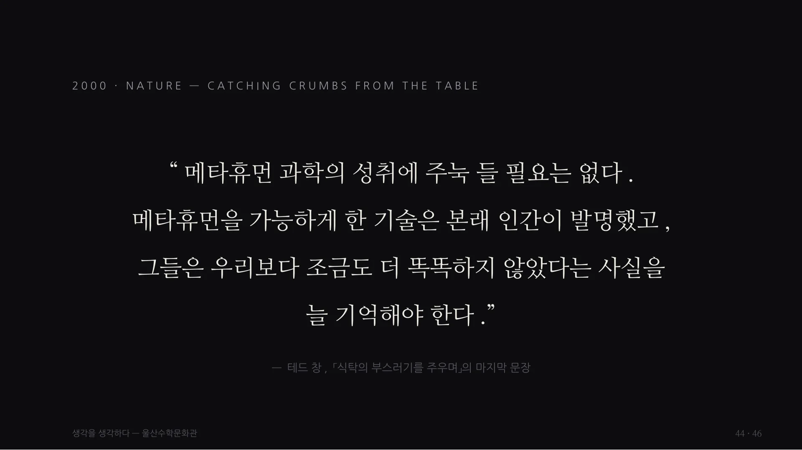
— 테드 창, 「식탁의 부스러기를 주우며」의 마지막 문장
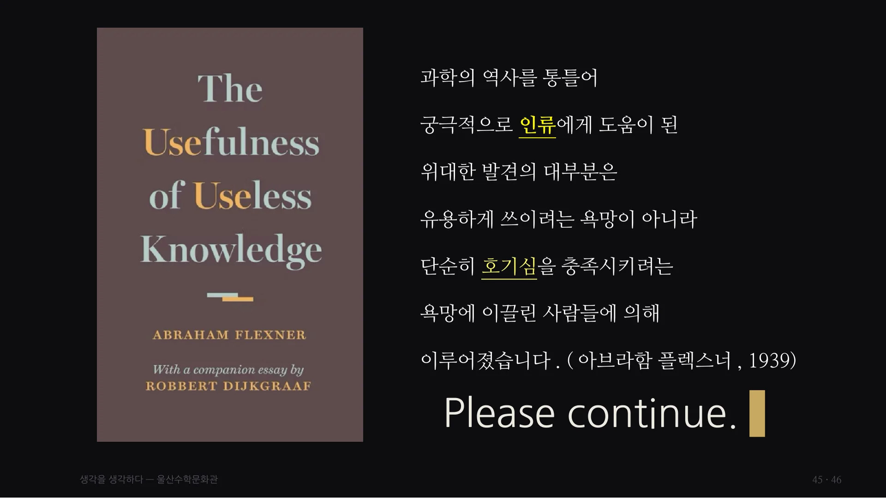
과학의 역사를 통틀어
궁극적으로 인류에게 도움이 된
위대한 발견의 대부분은
유용하게 쓰이려는 욕망이 아니라
단순히 호기심을 충족시키려는
욕망에 이끌린 사람들에 의해
이루어졌습니다. (아브라함 플렉스너, 1939)
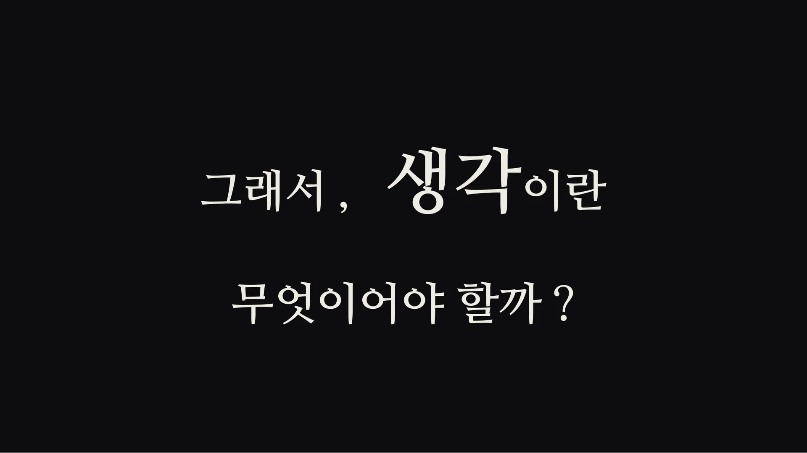